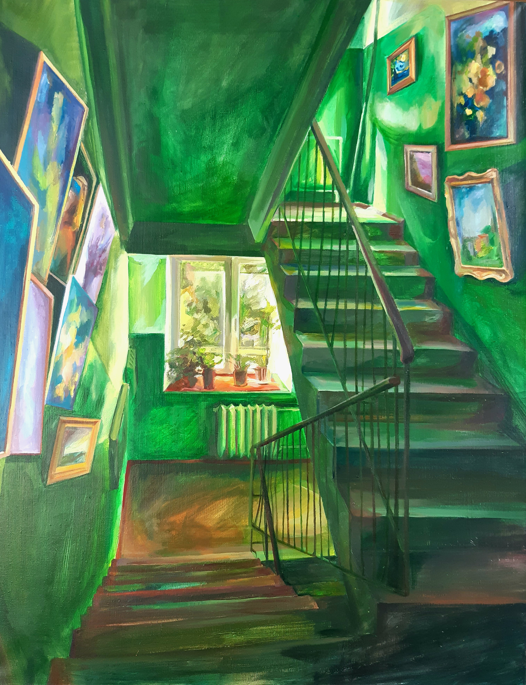

Подъездная серия
В этой серии работ пространство подъезда рассматривается как уникальная зона перехода, где сталкивается общественное и личное. Художнице интересно, какими предметами и почему люди украшают свои подъезды, ведь эти предметы могут становиться свидетельством попыток анонимных обитателей если не присвоить, то хотя бы придать значение этому стандартизированному пространству.

«Обложка серии»

«Зеленый», холст, акрил, 90×70 см, 2025

«Синий», холст, акрил, 90×70 см, 2025